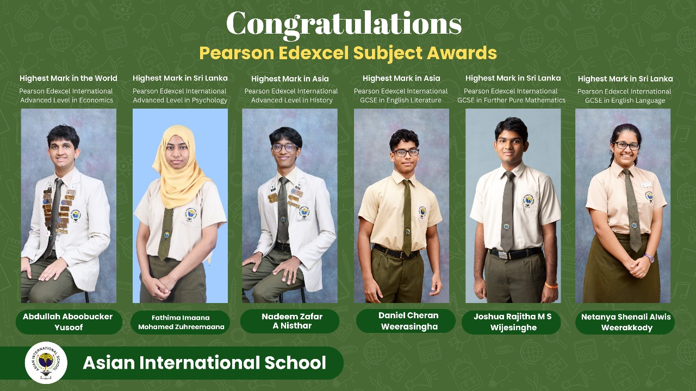

Asian International School proudly celebrates the remarkable achievements of our students in the Pearson Edexcel International Examinations. Their exceptional results at world, regional, and national levels reflect their dedication, perseverance, and academic excellence.
Congratulations to:
Abdullah Aboobucker Yusoof
Highest Mark in the World Pearson Edexcel International Advanced Level in Economics
Fathima Imaana Mohamed Zuhreemana
Highest Mark in Sri Lanka Pearson Edexcel International Advanced Level in Psychology
Nadeem Zafar A Nisthar
Highest Mark in Asia Pearson Edexcel International Advanced Level in History
Daniel Cheran Weerasingha
Highest Mark in Asia Pearson Edexcel International GCSE in English Literature
Joshua Rajitha M S Wijesinghe
Highest Mark in Sri Lanka Pearson Edexcel International GCSE in Further Pure Mathematics
Netanya Shenali Alwis Weerakkody
Highest Mark in Sri Lanka Pearson Edexcel International GCSE in English Language
These outstanding accomplishments are a testament to the high academic standards upheld at Asian International School. We congratulate our students on their success and wish them continued excellence in their future endeavors.